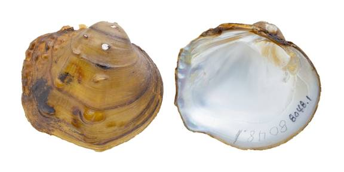

Cyclonaias nodulata (Rafinesque 1820)
Wartyback
Cyclonaias nodulata –Neches River [Neches River drainage], length 44.7 mm.
Identification
Shell structure: moderately thick and moderately inflated; shallow sulcus often present anterior to the posterior ridge.
Shell outline: subquadrate to subrotund; posterior slope wing-like.
Posterior ridge: rounded to angular, sometimes biangulate.
Shell color: yellowish-green or tan in small individuals becoming brown or reddish-brown in larger individuals; surface subglossy.
Rays: usually absent but if present faint.
Shell texture: two rows of large pustules adjacent to the sulcus, which run parallel from the umbo to the ventral margin. In some individuals pustules are obscure or one of the rows are missing; some may present randomly placed pustules elsewhere on the shell; posterior slope may have a small number of pustules or faint ridges.
Umbo: full and elevated well above the hinge line; umbo cavity deep, sometimes compressed.
Umbo sculpture: coarse, irregular ridges that eventually become part of the two rows of pustules.
Pseudocardinal teeth: large, triangular, rough, 2 divergent teeth in the left valve, typically with the posterior tooth being smaller than the anterior, 1 tooth in the right valve.
Lateral teeth: short, wide, straight, 2 in left valve, 1 in right valve.
Interdentum: short and moderately wide.
Nacre: white, iridescent posteriorly.
Other: not sexually dimorphic.
General Range: Eastern Texas to the Mississippi River of Louisiana, northeast to western New York, west through the lower Great Lakes basin to Iowa.
Habitat: Small to medium-sized rivers, often in the lower reaches of these systems, and occasionally in lakes and reservoirs. In riverine systems, occurs in main-channel habitats such as riffles and runs and in nearshore habitats along banks and backwaters. Often found in habitats with substrates composed of sand and gravel in moving water.
Legal listing status: